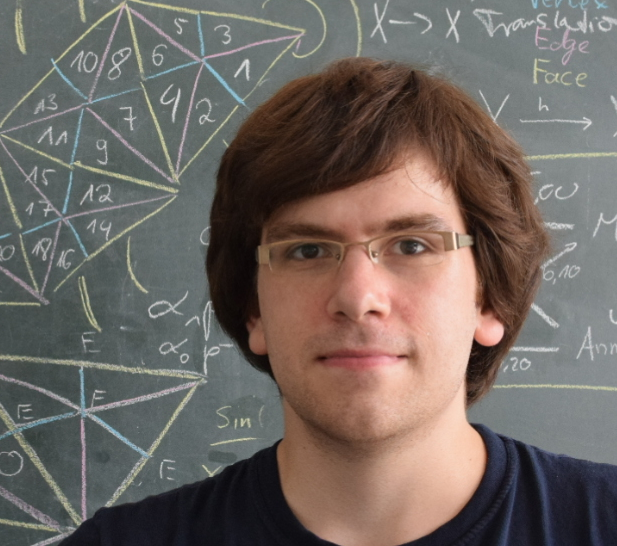

--- 
layout: default 
title: Markus Baumeister
description: Personal Website of Markus Baumeister
---


<html>
    <head>
        <link rel="stylesheet" type="text/css" href="style.css">
    </head>
    <body>
        <h1>
            <center>Dr. Markus Baumeister</center>
        </h1>
        <table>
            <tr>
                <td>
                    <div class="side-crop">
                        
                    </div>
                </td>
                <td>
                    <p>
                        Consultant at
                        <a href="https://www.d-fine.com/">d-fine</a><br>
                        </br>
                        </br>
                        E-mail: <a href="mailto:baumeister@informatik.rwth-aachen.de">baumeister@informatik.rwth-aachen.de</a><br>
                        <a href="https://www.linkedin.com/in/drmarkusbaumeister/">LinkedIn</a>  <a href="https://www.xing.com/profile/Markus_Baumeister37">XING</a>
                    </p>
                </td>
            </tr>
        </table>
        </br>
        <b>Publications:</b>
        <ul>
            <li><i>How close is a quad mesh to a polycube?</i> 2022 (joint work with Leif Kobbelt). 
                <a href="https://www.sciencedirect.com/science/article/abs/pii/S0925772122001213">Paper</a> 
            </li>
            <li><i>Clique dynamics of locally cyclic graphs with &delta; &ge; 6</i> 2021 (joint work with Anna Limbach). 
                <a href="https://www.sciencedirect.com/science/article/abs/pii/S0012365X22000796">Paper</a> 
                <a href="https://arxiv.org/abs/2103.15190">arXiv</a> 
            </li>
            <li>PhD-thesis <i>Regularity Aspects of Combinatorial Simplicial Surfaces</i> 2020 
                <a href="https://publications.rwth-aachen.de/record/793575">https://publications.rwth-aachen.de/record/793575</a> 
                <a href="pdf/Doktorarbeit.pdf" target="_blank">PDF</a>
            </li>
            <li><i>Characterisation of geodesic self-dual regular surface triangulations.</i> 2019. 
                <a href="https://arxiv.org/abs/1910.10112">arXiv</a> (<a href="markusbaumeister.github.io/code/UncollapsedGeodesicTriangleGroups.g">Code</a>)
            </li>
            <li><i>Foldability of simplicial surfaces onto a triangle.</i> arXiv 2019. 
                <a href="https://arxiv.org/abs/1904.12537">arXiv</a>
            </li>
            <li>GAP-package <i>SimplicialSurfaces</i>. <a href="https://github.com/markusbaumeister/simplicial-surfaces">GitHub.</a></li>
            <li>Master thesis <i>&Uuml;berlagerungen simplizialer Fl&auml;chenkomplexe durch Faltungen</i> (<i>Covering of simplicial surfaces using foldings</i>). 
                <a href="pdf/Masterarbeit.pdf" target="_blank">PDF</a> 2016</li>
            <li>Bachelor thesis <i>Periodische Faltmuster mit Singularit&auml;ten</i> (<i>Periodic crease patterns with singularities</i>).
                <a href="pdf/Bachelorarbeit.pdf" target="_blank">PDF</a> 2014</li>
        </ul>
    </br>
   </body>
</html>
